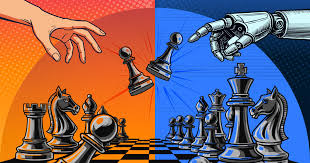

Cost
AI's Financial Cost
The financial cost of AI is often underestimated
While companies such as OpenAI and Nvidia report record growth, the scale of spending is unprecedented.
Open AI’s CEO Sam Altman has stated that OpenAI’s revenues exceeded $13bn in 2025. And it would be remiss to not also mention that OpenAI in particular is burning money just as quickly.
Reports indicate that Microsoft had made funding commitments to OpenAI of approximately $13bn in which the majority has already been funded.
These same disclosures report also that OpenAI lost $12bn in the last quarter.
Meanwhile, AI-related stocks now represent a substantial share of major stock market according to the bank of England “AI stocks now account for roughly 44% of the S&P market capitalisation” meaning the gambling mindset tech companies are operating with in this current market will almost certainly fall on the everyday investors if the situation goes awry.
AI Arms Race
The phrase “AI Arms Race” reflects intense competition between technology companies and increasingly between nations to develop the most advanced systems.
This competition serves two primary goals: keep investors happy and continue to secure market dominance.
However, AI technologies are also being integrated into military systems. Autonomous drones capable of identifying and striking targets with the touch of a button raises ethical and legal questions. If the system makes an error who bears the responsibility the developer, the operator or the deploying state?
Similar concerns arise with self-driving cars get into accidents. Tesla’s self-driving models have caused over 41 fatal crashes in the past decade, stressing that as automation expands into high-stakes domains, accountability frameworks must evolve alongside it.